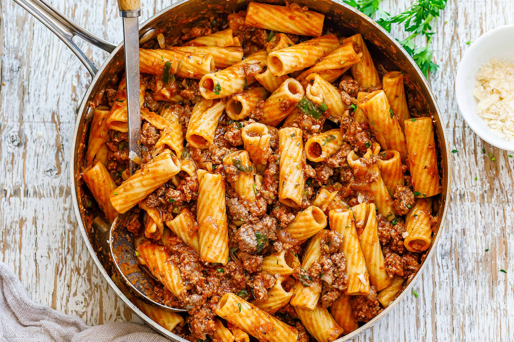

Sweet Garlic Tomato Beef Pasta

Beef Pasta
INEXPENSIVE, EASY, AND DE-LICIOUS!!! My aunt made this for us when we were growing up and now I make it for my family. The hint of sweetness makes it a kids favorite.
Ingredients
- 1 (16 ounce) package medium seashell pasta
- 1 ½ pounds ground beef
- 1 small onion, chopped
- 2 cloves garlic, minced
- 3 (14.5 ounce) cans Italian stewed tomatoes/li>
- 3 beef bouillon cubes
- 1 ½ tablespoons white sugar
- 1 teaspoon garlic salt
- ⅛ teaspoon ground black pepper
Steps
- Bring a large pot of lightly salted water to a boil. Place pasta in the pot, cook for 8 to 10 minutes, until al dente, and drain.
- In a large skillet over medium heat, mix the beef, onion, and, garlic, and cook until beef is evenly brown.
- In a blender or food processor, liquefy the tomatoes. Pour into the skillet with the beef. Mix in beef bouillon, sugar, garlic salt, and pepper. Cover, and simmer 10 minutes, stirring occasionally, until bouillon has dissolved. Stir in the pasta until evenly coated with the sauce to serve.